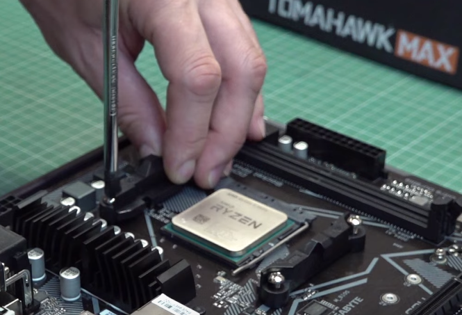
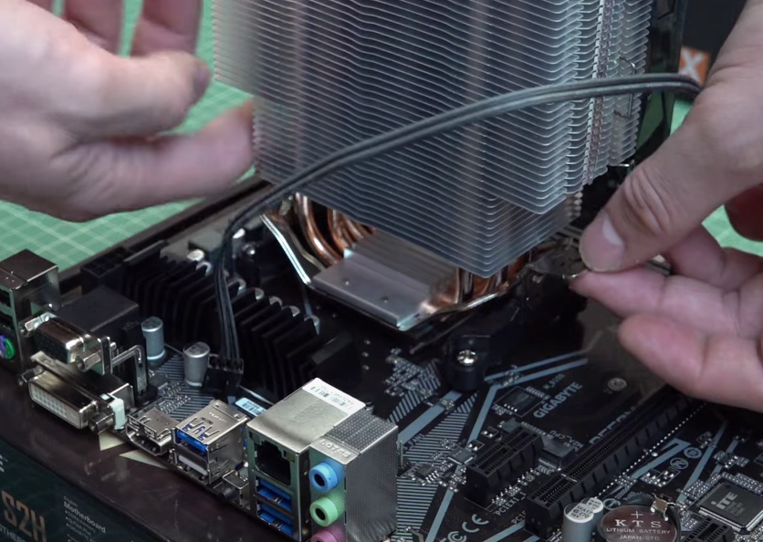
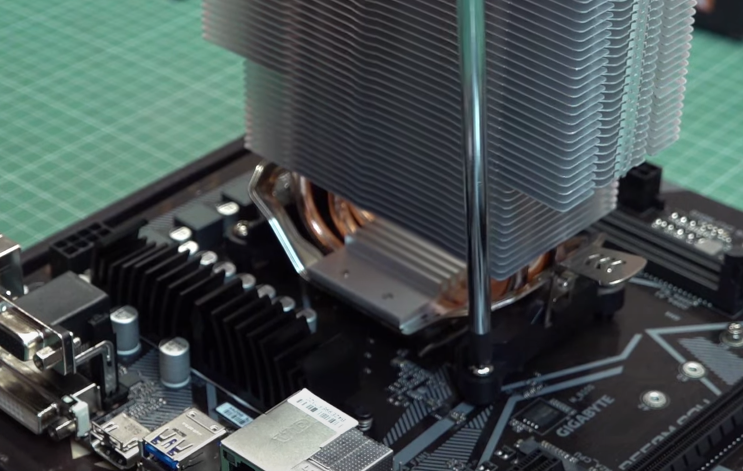

Установка кулеров с креплением пружинного типа на сокеты AMD всегда было занятием не из лёгких, особенно для новичков. Часто бывает так что зацепил одну скобу, жмёшь на противоположную, что с рычагом, а петля всё никак не цепляется. В такой ситуации не стоит с бешеной силой давить на кулер в отчаянных попытка зацепить скобу, ведь кажется что ещё савсем чуть-чуть и получится дотянуться. Такие действия могут привести к разлому текстолита материнской платы и следовательно её выходу из строя.
Есть гораздо более эффективный метод. Он заключается в том, что нам нужно ослабить виты крпёжной
рамы, которые соединяют её с бэкплейтом. Полностью выкручивать их не стоит.

Ослаблять винты нужно до тех пор, пока рамки не начнут гулять. Это даст нам боьлше свободы при установке скоб.
Теперь мы можем абсолютно спокойно зацепить обе скобы, не прикладываюя никаких усилий.

Для завершения монтажа необходимо равномерно (не каждый винт до конца, а по немногу), перекрестно затянуть винты которые мы ослабили. Иногда для этого на время
установки требуется снять вентилятор с радиатора кулера.
